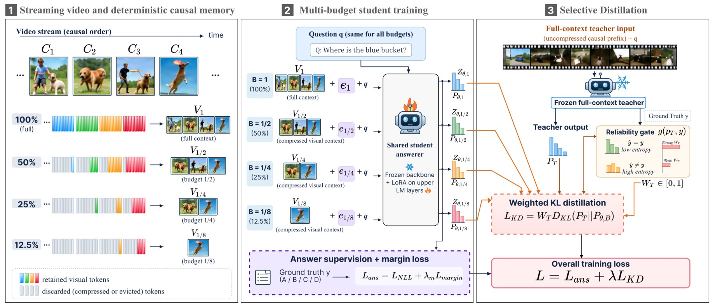
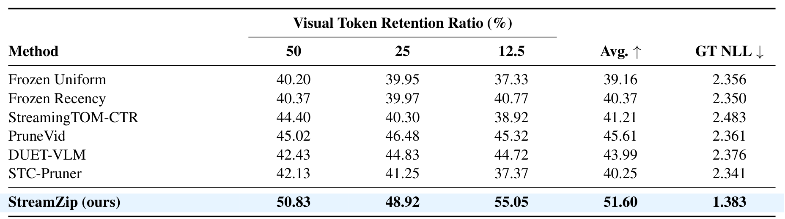
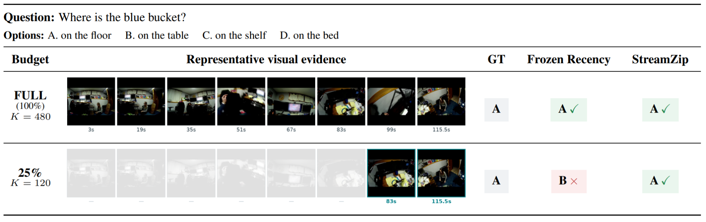

Abstract
Long and streaming video understanding requires efficient visual memory, yet existing compression methods primarily focus on which visual tokens to retain rather than how models reason over compressed evidence. We identify this challenge as Compression–Answerer Mismatch and propose StreamZip, a budget-conditioned post-training framework that adapts a shared video VLM across multiple visual-memory budgets. StreamZip combines deterministic causal retention, explicit budget conditioning, and selective full-context distillation to improve answering under compressed visual contexts. On an OVO-Bench-derived corpus, StreamZip improves average compressed multiple-choice accuracy by 6.84%p under source-disjoint three-fold evaluation. On a separate internal validation set, StreamZip achieves 51.60% average accuracy, outperforming the strongest adapted compression baseline by 5.99%p. Furthermore, at a 25% visual-token budget, StreamZip achieves higher accuracy than PruneVid with approximately 42% lower warm query latency. These results highlight answerer adaptation as a complementary direction to visual token compression.
StreamZip

Overview of StreamZip: (1) deterministic causal memory under multiple token budgets, (2) multi-budget training of a shared student answerer, and (3) selective full-context distillation.
Rather than designing a better token selector, StreamZip adapts the answerer to compressed evidence. A fixed, deterministic causal retention process keeps a nested, temporally balanced subset of visual tokens for each incoming chunk, so that discarded evidence never reappears. Each training example is viewed under several budgets (100%, 50%, 25% and 12.5%), and a single shared answerer is trained across all of them with a learnable budget embedding inserted between the visual context and the question, using LoRA on the upper language-model layers. The answerer is optimized with a margin-based answer objective and selective full-context distillation, where a frozen teacher that sees the uncompressed prefix transfers knowledge only when its prediction is correct and confident.
Results

Source-video macro multiple-choice accuracy (%) with an identical Qwen3-VL-8B backbone and matched visual-token budgets.
Under matched backbones and budgets, StreamZip reaches 51.60% average accuracy across the 50%, 25% and 12.5% budgets, outperforming the strongest adapted compression baseline (PruneVid) by 5.99%p. It also achieves the lowest ground-truth NLL, and the gap is largest at the most restrictive 12.5% budget.
Qualitative Results

With full visual context, both models answer correctly. Under a 25% budget, Frozen Recency fails while StreamZip keeps the correct answer.
When only a quarter of the visual tokens are retained, the frozen model loses the answer, whereas StreamZip still answers correctly from the reduced evidence.